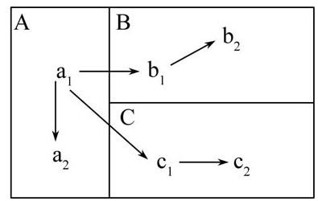
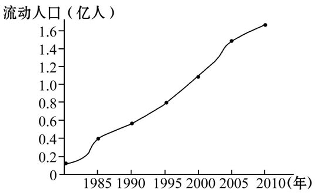
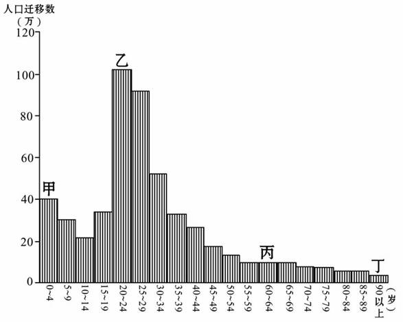
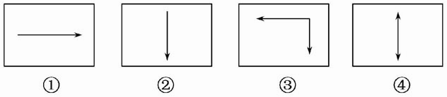
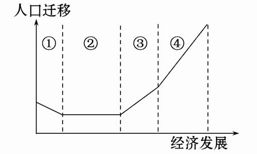
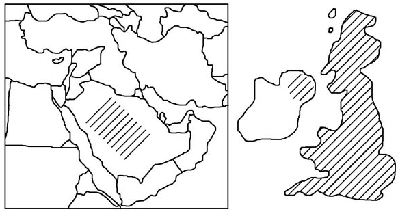
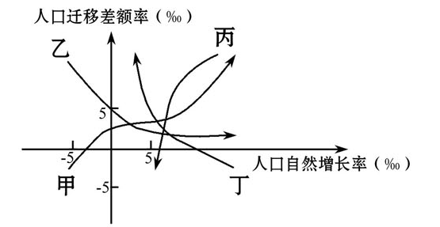

None - Fade - Slide - Convex - Concave - Zoom
选择班级
幻灯片样式
Black (default) -
White -
League -
Sky -
Beige -
Simple
Serif -
Blood -
Night -
Moon -
Solarized
1.一列火车由西安开往上海，以下是四位旅客的谈话，判断属于人口迁移的是（ ）
A.甲说：“我此次是去上海参观游览世博园。”
B.乙说：“我被上海交通大学录取，现去学校报到。”
C.丙说：“我到上海为公司洽谈业务。”
D.丁说：“我是去上海采购。”
读下图，回答2～4题。
2．行政区界常被用来区分是否发生人口迁移。图中A、B、C是三个不同行政区。其中常被认为是人口迁移的是（ ）
A．a1→b1
B．a1→a2
C．b1→b2
D．c1→c2
3．如果图中A、B、C是三个不同的国家，其中属于国际人口迁移的是（ ）
A．a1→a2
B．a1→b1
C．b1→b2
D．c1→c2
4．如果A、B、C是三个不同国家，a1、b1、c1是农村地区，a2、b2、c2是城市地区。其中能够代表当今世界发展中国家人口主要迁移方向的是（ ）
A．a1→a2、a1→b1
B．a1→b1、b1→b2
C．b1→b2、c1→c2、a1→a2
D．c1→c2、a1→c1
5.下图为我国近年来流动人口增长曲线图，下列因素中与近年来我国流动人口迅速增加关系密切的是（ ）
A．农村经济发展，需要大量劳动力
B．城市产业提升，对劳动力的需求量
减少
C．户籍制度改革，为人口流动松绑
D．人口增长迅速，就业压力增大
6.（2010·浙江学业水平测试）我国大量农民进城务工、经商的意义在于（ ）
A.促进人口的流动
B.改善城市的生态环境
C.改善区域人口结构
D.提升农业的产业地位
下图为某地人口迁移与年龄关系示意图，读图回答7、8题。
7.从图中判断，影响该地区人口迁移的主要因素最可能是
（ ）
A.人口的老龄化
B.婚姻家庭
C.政治因素
D.经济因素
8.图中甲～丁不同年龄的人口迁移，有明显相关性的是
（ ）
A.甲、乙
B.甲、丙
C.乙、丙
D.乙、丁
9.（2010·郑州高一检测）改革开放后，中国大批学生到欧美留学和大量民工涌向我国东南沿海大城市，两者的共同之处是（ ）
A．都是政策性移民，具有自发的性质
B．交通和通信的发展是最重要的拉力因素
C．地区自然条件相差很大，环境质量不同是决定性因素
D．都是追求自身职业更好的发展，谋求更高的生活水平
1.下列①②③④示意图反映了一些国家近年来因经济布局调整而形成的人口迁移方向，这些国家是（ ）
A.①德国 ②俄罗斯 ③日本 ④美国
B.①俄罗斯 ②德国 ③美国 ④日本
C.①美国 ②日本 ③俄罗斯 ④德国
D.①日本 ②美国 ③德国 ④俄罗斯
下图显示了人口迁移与经济发展之间的关系，读图回答2、3题。
2.图中阶段②最有可能是（ ）
A.原始农业阶段
B.传统农业阶段
C.工业化阶段
D.后工业化阶段
3.影响③④阶段人口迁移的主要因素是（ ）
A.自然因素
B.国家政策
C.社会经济
D.战争
2010年3月14日，泰国各地“红衫军”成员前往首都曼谷参加示威游行，他们乘坐大巴、出租车、嘟嘟车等交通工具到达曼谷，不少人还带着蔬菜、粮食和锅碗瓢勺，准备生火做饭、安营扎寨。据此回答4、5 题。
4.此次各地“红衫军”聚集曼谷的现象属于（ ）
A.人口迁移
B.人口流动
C.人口活动
D.人口增长
5.此现象的影响因素是（ ）
A.自然环境的差异
B.地区间经济发展水平的差异
C.政治
D.家庭婚姻的变化
6.（2010·长春高一检测）第二次世界大战后，图示部分国家都吸引了大量移民，下列叙述正确的是（ ）
A.都因老龄化吸引移民
B.都因资源的大量开采吸引移民
C.都因经济发展吸引移民
D.都因气候优越吸引移民
（2010·汕头模拟）下图表示1978～2010年期间，甲、乙、丙、丁四个城市人口变动统计情况（人口迁移差额率为人口迁入与迁出的差额占总人口的比重）。读图，回答7、8题。
7．甲曲线所代表城市目前（ ）
A．人口一直在增长
B．人口压力较大
C．人口老龄化日趋严重
D．人口只有迁入没有迁出
8．下列省区中，最符合丁所反映的人口变动情况的是
（ ）
A．四川
B．新疆
C．河南
D．江苏